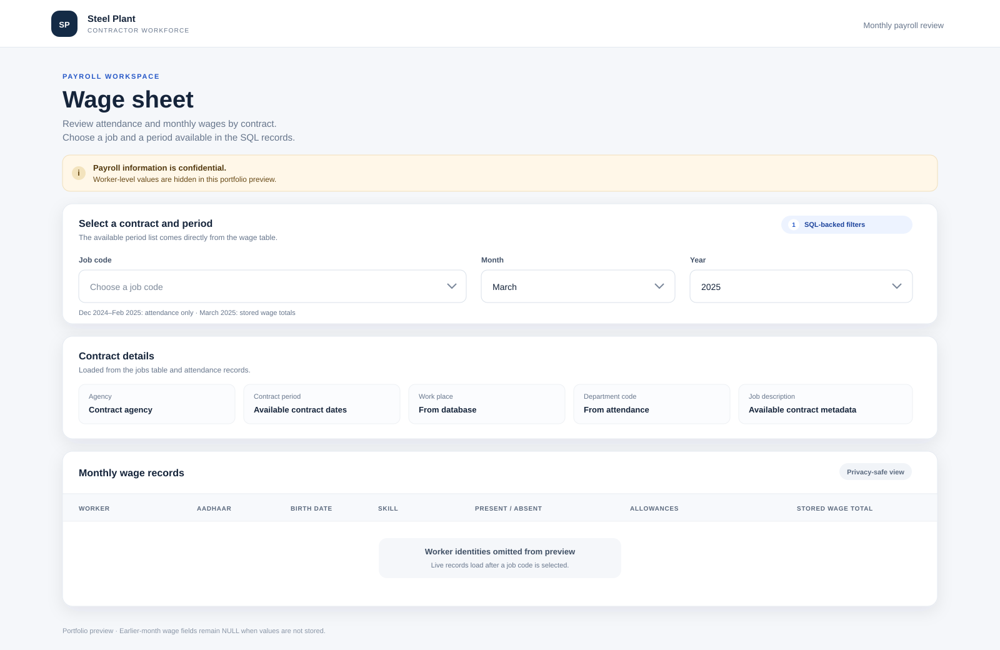

My work combines AI fundamentals, programming, data analysis and web development to turn practical problems into usable systems.
I completed my Bachelor of Technology in Computer Science Engineering (Artificial Intelligence) at Parul University in January 2026. My technical profile includes Python, SQL, data analysis, machine learning fundamentals and web development.
I have worked on a steel-plant wage dashboard and a driver drowsiness detection system, giving me experience across databases, APIs, interactive interfaces, computer vision and machine-learning concepts.
Portfolio case studies based on the project files and screenshots you provided.
01 — FULL STACK / DATA DASHBOARDDec 2024 — Mar 2025
Contract Labour Wage Sheet Generator
Built during a 2025 full-stack internship in the IT & ERP department at RINL, Visakhapatnam Steel Plant. The responsive dashboard connects to MySQL through Express APIs. Attendance is available for Dec 2024–Feb 2025; stored wage totals are available for Mar 2025. Missing payroll values display as NULL.

Available periods: Dec 2024–Feb 2025 attendance; Mar 2025 stored wages
A local Python desktop monitor and browser demo using OpenCV and MediaPipe Face Landmarker. Includes configurable eye-closure timing, calibration, blink/yawn signals, local session reports, and a no-send SOS test. Webcam frames stay on the device and are not saved. The demo is not safety-certified and makes no accuracy claim.